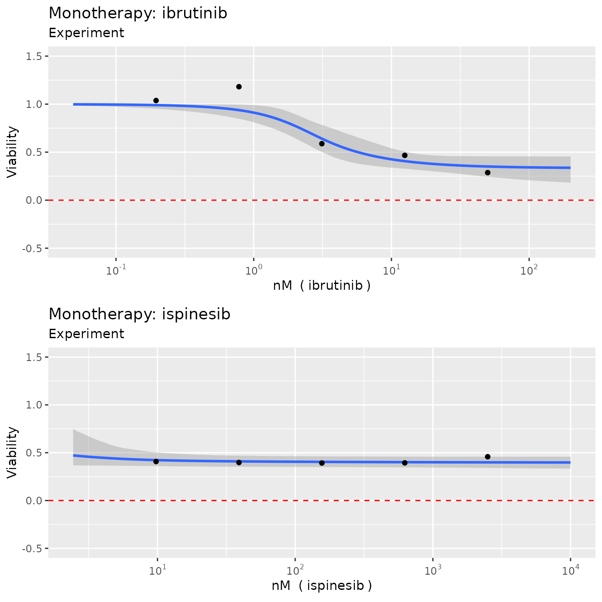
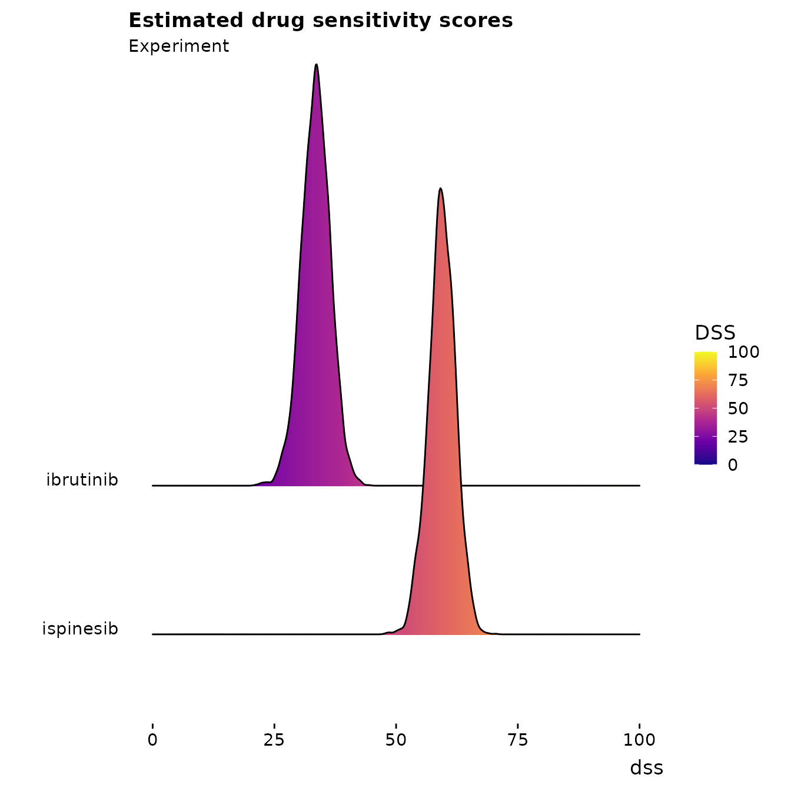

Single experiment example
Leiv Rønneberg
05/09/2022
Single_experiement.RmdIn the R package, we’ve attached two example datasets from a large drug combination screening experiment on diffuse large B-cell lymphoma. We’ll use these to show some simple use cases of the main functions and how to interpret the results.
Let’s load in the first example and have a look at it
library(bayesynergy)
data("mathews_DLBCL")
y = mathews_DLBCL[[1]][[1]]
x = mathews_DLBCL[[1]][[2]]
head(cbind(y,x))## Viability ibrutinib ispinesib
## [1,] 1.2295618 0.0000 0
## [2,] 1.0376006 0.1954 0
## [3,] 1.1813851 0.7812 0
## [4,] 0.5882688 3.1250 0
## [5,] 0.4666700 12.5000 0
## [6,] 0.2869514 50.0000 0We see that the the measured viability scores are stored in the
vector y, while x is a matrix with two columns
giving the corresponding concentrations where the viability scores were
read off.
Fitting the regression model is simple enough, and can be done on default settings simply by running the following code (where we add the names of the drugs involved, the concentration units for plotting purposes, and calculate the bayes factor).
fit = bayesynergy(y,x, drug_names = c("ibrutinib", "ispinesib"),
units = c("nM","nM"),bayes_factor = T)##
## SAMPLING FOR MODEL 'gp_grid' NOW (CHAIN 1).
## Chain 1:
## Chain 1: Gradient evaluation took 0.000107 seconds
## Chain 1: 1000 transitions using 10 leapfrog steps per transition would take 1.07 seconds.
## Chain 1: Adjust your expectations accordingly!
## Chain 1:
## Chain 1:
## Chain 1: Iteration: 1 / 2000 [ 0%] (Warmup)
## Chain 1: Iteration: 200 / 2000 [ 10%] (Warmup)
## Chain 1: Iteration: 400 / 2000 [ 20%] (Warmup)
## Chain 1: Iteration: 600 / 2000 [ 30%] (Warmup)
## Chain 1: Iteration: 800 / 2000 [ 40%] (Warmup)
## Chain 1: Iteration: 1000 / 2000 [ 50%] (Warmup)
## Chain 1: Iteration: 1001 / 2000 [ 50%] (Sampling)
## Chain 1: Iteration: 1200 / 2000 [ 60%] (Sampling)
## Chain 1: Iteration: 1400 / 2000 [ 70%] (Sampling)
## Chain 1: Iteration: 1600 / 2000 [ 80%] (Sampling)
## Chain 1: Iteration: 1800 / 2000 [ 90%] (Sampling)
## Chain 1: Iteration: 2000 / 2000 [100%] (Sampling)
## Chain 1:
## Chain 1: Elapsed Time: 2.65967 seconds (Warm-up)
## Chain 1: 2.40377 seconds (Sampling)
## Chain 1: 5.06344 seconds (Total)
## Chain 1:
##
## SAMPLING FOR MODEL 'gp_grid' NOW (CHAIN 2).
## Chain 2:
## Chain 2: Gradient evaluation took 7.5e-05 seconds
## Chain 2: 1000 transitions using 10 leapfrog steps per transition would take 0.75 seconds.
## Chain 2: Adjust your expectations accordingly!
## Chain 2:
## Chain 2:
## Chain 2: Iteration: 1 / 2000 [ 0%] (Warmup)
## Chain 2: Iteration: 200 / 2000 [ 10%] (Warmup)
## Chain 2: Iteration: 400 / 2000 [ 20%] (Warmup)
## Chain 2: Iteration: 600 / 2000 [ 30%] (Warmup)
## Chain 2: Iteration: 800 / 2000 [ 40%] (Warmup)
## Chain 2: Iteration: 1000 / 2000 [ 50%] (Warmup)
## Chain 2: Iteration: 1001 / 2000 [ 50%] (Sampling)
## Chain 2: Iteration: 1200 / 2000 [ 60%] (Sampling)
## Chain 2: Iteration: 1400 / 2000 [ 70%] (Sampling)
## Chain 2: Iteration: 1600 / 2000 [ 80%] (Sampling)
## Chain 2: Iteration: 1800 / 2000 [ 90%] (Sampling)
## Chain 2: Iteration: 2000 / 2000 [100%] (Sampling)
## Chain 2:
## Chain 2: Elapsed Time: 2.57747 seconds (Warm-up)
## Chain 2: 2.41211 seconds (Sampling)
## Chain 2: 4.98958 seconds (Total)
## Chain 2:
##
## SAMPLING FOR MODEL 'gp_grid' NOW (CHAIN 3).
## Chain 3:
## Chain 3: Gradient evaluation took 7.1e-05 seconds
## Chain 3: 1000 transitions using 10 leapfrog steps per transition would take 0.71 seconds.
## Chain 3: Adjust your expectations accordingly!
## Chain 3:
## Chain 3:
## Chain 3: Iteration: 1 / 2000 [ 0%] (Warmup)
## Chain 3: Iteration: 200 / 2000 [ 10%] (Warmup)
## Chain 3: Iteration: 400 / 2000 [ 20%] (Warmup)
## Chain 3: Iteration: 600 / 2000 [ 30%] (Warmup)
## Chain 3: Iteration: 800 / 2000 [ 40%] (Warmup)
## Chain 3: Iteration: 1000 / 2000 [ 50%] (Warmup)
## Chain 3: Iteration: 1001 / 2000 [ 50%] (Sampling)
## Chain 3: Iteration: 1200 / 2000 [ 60%] (Sampling)
## Chain 3: Iteration: 1400 / 2000 [ 70%] (Sampling)
## Chain 3: Iteration: 1600 / 2000 [ 80%] (Sampling)
## Chain 3: Iteration: 1800 / 2000 [ 90%] (Sampling)
## Chain 3: Iteration: 2000 / 2000 [100%] (Sampling)
## Chain 3:
## Chain 3: Elapsed Time: 3.83034 seconds (Warm-up)
## Chain 3: 2.95499 seconds (Sampling)
## Chain 3: 6.78533 seconds (Total)
## Chain 3:
##
## SAMPLING FOR MODEL 'gp_grid' NOW (CHAIN 4).
## Chain 4:
## Chain 4: Gradient evaluation took 6.4e-05 seconds
## Chain 4: 1000 transitions using 10 leapfrog steps per transition would take 0.64 seconds.
## Chain 4: Adjust your expectations accordingly!
## Chain 4:
## Chain 4:
## Chain 4: Iteration: 1 / 2000 [ 0%] (Warmup)
## Chain 4: Iteration: 200 / 2000 [ 10%] (Warmup)
## Chain 4: Iteration: 400 / 2000 [ 20%] (Warmup)
## Chain 4: Iteration: 600 / 2000 [ 30%] (Warmup)
## Chain 4: Iteration: 800 / 2000 [ 40%] (Warmup)
## Chain 4: Iteration: 1000 / 2000 [ 50%] (Warmup)
## Chain 4: Iteration: 1001 / 2000 [ 50%] (Sampling)
## Chain 4: Iteration: 1200 / 2000 [ 60%] (Sampling)
## Chain 4: Iteration: 1400 / 2000 [ 70%] (Sampling)
## Chain 4: Iteration: 1600 / 2000 [ 80%] (Sampling)
## Chain 4: Iteration: 1800 / 2000 [ 90%] (Sampling)
## Chain 4: Iteration: 2000 / 2000 [100%] (Sampling)
## Chain 4:
## Chain 4: Elapsed Time: 4.77225 seconds (Warm-up)
## Chain 4: 2.88542 seconds (Sampling)
## Chain 4: 7.65767 seconds (Total)
## Chain 4:
##
## SAMPLING FOR MODEL 'nointeraction' NOW (CHAIN 1).
## Chain 1:
## Chain 1: Gradient evaluation took 3.1e-05 seconds
## Chain 1: 1000 transitions using 10 leapfrog steps per transition would take 0.31 seconds.
## Chain 1: Adjust your expectations accordingly!
## Chain 1:
## Chain 1:
## Chain 1: Iteration: 1 / 2000 [ 0%] (Warmup)
## Chain 1: Iteration: 200 / 2000 [ 10%] (Warmup)
## Chain 1: Iteration: 400 / 2000 [ 20%] (Warmup)
## Chain 1: Iteration: 600 / 2000 [ 30%] (Warmup)
## Chain 1: Iteration: 800 / 2000 [ 40%] (Warmup)
## Chain 1: Iteration: 1000 / 2000 [ 50%] (Warmup)
## Chain 1: Iteration: 1001 / 2000 [ 50%] (Sampling)
## Chain 1: Iteration: 1200 / 2000 [ 60%] (Sampling)
## Chain 1: Iteration: 1400 / 2000 [ 70%] (Sampling)
## Chain 1: Iteration: 1600 / 2000 [ 80%] (Sampling)
## Chain 1: Iteration: 1800 / 2000 [ 90%] (Sampling)
## Chain 1: Iteration: 2000 / 2000 [100%] (Sampling)
## Chain 1:
## Chain 1: Elapsed Time: 0.38295 seconds (Warm-up)
## Chain 1: 0.38456 seconds (Sampling)
## Chain 1: 0.76751 seconds (Total)
## Chain 1:
##
## SAMPLING FOR MODEL 'nointeraction' NOW (CHAIN 2).
## Chain 2:
## Chain 2: Gradient evaluation took 2.7e-05 seconds
## Chain 2: 1000 transitions using 10 leapfrog steps per transition would take 0.27 seconds.
## Chain 2: Adjust your expectations accordingly!
## Chain 2:
## Chain 2:
## Chain 2: Iteration: 1 / 2000 [ 0%] (Warmup)
## Chain 2: Iteration: 200 / 2000 [ 10%] (Warmup)
## Chain 2: Iteration: 400 / 2000 [ 20%] (Warmup)
## Chain 2: Iteration: 600 / 2000 [ 30%] (Warmup)
## Chain 2: Iteration: 800 / 2000 [ 40%] (Warmup)
## Chain 2: Iteration: 1000 / 2000 [ 50%] (Warmup)
## Chain 2: Iteration: 1001 / 2000 [ 50%] (Sampling)
## Chain 2: Iteration: 1200 / 2000 [ 60%] (Sampling)
## Chain 2: Iteration: 1400 / 2000 [ 70%] (Sampling)
## Chain 2: Iteration: 1600 / 2000 [ 80%] (Sampling)
## Chain 2: Iteration: 1800 / 2000 [ 90%] (Sampling)
## Chain 2: Iteration: 2000 / 2000 [100%] (Sampling)
## Chain 2:
## Chain 2: Elapsed Time: 0.376512 seconds (Warm-up)
## Chain 2: 0.252424 seconds (Sampling)
## Chain 2: 0.628936 seconds (Total)
## Chain 2:
##
## SAMPLING FOR MODEL 'nointeraction' NOW (CHAIN 3).
## Chain 3:
## Chain 3: Gradient evaluation took 2.7e-05 seconds
## Chain 3: 1000 transitions using 10 leapfrog steps per transition would take 0.27 seconds.
## Chain 3: Adjust your expectations accordingly!
## Chain 3:
## Chain 3:
## Chain 3: Iteration: 1 / 2000 [ 0%] (Warmup)
## Chain 3: Iteration: 200 / 2000 [ 10%] (Warmup)
## Chain 3: Iteration: 400 / 2000 [ 20%] (Warmup)
## Chain 3: Iteration: 600 / 2000 [ 30%] (Warmup)
## Chain 3: Iteration: 800 / 2000 [ 40%] (Warmup)
## Chain 3: Iteration: 1000 / 2000 [ 50%] (Warmup)
## Chain 3: Iteration: 1001 / 2000 [ 50%] (Sampling)
## Chain 3: Iteration: 1200 / 2000 [ 60%] (Sampling)
## Chain 3: Iteration: 1400 / 2000 [ 70%] (Sampling)
## Chain 3: Iteration: 1600 / 2000 [ 80%] (Sampling)
## Chain 3: Iteration: 1800 / 2000 [ 90%] (Sampling)
## Chain 3: Iteration: 2000 / 2000 [100%] (Sampling)
## Chain 3:
## Chain 3: Elapsed Time: 0.381667 seconds (Warm-up)
## Chain 3: 0.372501 seconds (Sampling)
## Chain 3: 0.754168 seconds (Total)
## Chain 3:
##
## SAMPLING FOR MODEL 'nointeraction' NOW (CHAIN 4).
## Chain 4:
## Chain 4: Gradient evaluation took 2.5e-05 seconds
## Chain 4: 1000 transitions using 10 leapfrog steps per transition would take 0.25 seconds.
## Chain 4: Adjust your expectations accordingly!
## Chain 4:
## Chain 4:
## Chain 4: Iteration: 1 / 2000 [ 0%] (Warmup)
## Chain 4: Iteration: 200 / 2000 [ 10%] (Warmup)
## Chain 4: Iteration: 400 / 2000 [ 20%] (Warmup)
## Chain 4: Iteration: 600 / 2000 [ 30%] (Warmup)
## Chain 4: Iteration: 800 / 2000 [ 40%] (Warmup)
## Chain 4: Iteration: 1000 / 2000 [ 50%] (Warmup)
## Chain 4: Iteration: 1001 / 2000 [ 50%] (Sampling)
## Chain 4: Iteration: 1200 / 2000 [ 60%] (Sampling)
## Chain 4: Iteration: 1400 / 2000 [ 70%] (Sampling)
## Chain 4: Iteration: 1600 / 2000 [ 80%] (Sampling)
## Chain 4: Iteration: 1800 / 2000 [ 90%] (Sampling)
## Chain 4: Iteration: 2000 / 2000 [100%] (Sampling)
## Chain 4:
## Chain 4: Elapsed Time: 0.388755 seconds (Warm-up)
## Chain 4: 0.297208 seconds (Sampling)
## Chain 4: 0.685963 seconds (Total)
## Chain 4:## Calculating the Bayes factorThe resulting model can be summarised by running
summary(fit)## mean se_mean sd 2.5% 50% 97.5% n_eff Rhat
## la_1[1] 0.3330 0.002241 0.0753 1.41e-01 0.343318 0.451 1131 1.003
## la_2[1] 0.3842 0.005011 0.0695 1.08e-01 0.397155 0.455 192 1.016
## log10_ec50_1 0.4851 0.004908 0.1612 2.41e-01 0.451266 0.899 1078 1.003
## log10_ec50_2 -1.0328 0.018170 0.9781 -3.33e+00 -0.912133 0.455 2897 1.000
## slope_1 2.0387 0.018483 0.9440 8.58e-01 1.810958 4.544 2609 1.000
## slope_2 1.4520 0.026560 1.1142 7.95e-02 1.173651 4.433 1760 1.004
## ell 3.0192 0.026954 1.3868 1.26e+00 2.693481 6.650 2647 1.002
## sigma_f 0.8178 0.014792 0.7559 1.72e-01 0.606649 2.800 2612 1.002
## s 0.0965 0.000296 0.0147 7.29e-02 0.094660 0.130 2465 1.001
## dss_1 33.4193 0.052324 2.9682 2.74e+01 33.450162 39.330 3218 1.000
## dss_2 59.4191 0.045649 2.7452 5.37e+01 59.488648 64.462 3617 1.001
## rVUS_f 82.7757 0.013465 0.8472 8.11e+01 82.787269 84.386 3959 0.999
## rVUS_p0 73.0043 0.035630 2.1928 6.84e+01 73.070663 77.100 3788 1.001
## VUS_Delta -9.7714 0.041465 2.3414 -1.47e+01 -9.731673 -5.380 3189 1.001
## VUS_syn -9.8157 0.041641 2.3022 -1.47e+01 -9.753138 -5.567 3057 1.001
## VUS_ant 0.0444 0.002100 0.1133 5.46e-06 0.000082 0.355 2911 1.003
##
## log-Pseudo Marginal Likelihood (LPML) = 51.481
## Estimated Bayes factor in favor of full model over non-interaction only model: 34.45868which gives posterior summaries of the parameters of the model.
In addition, the model calculates summary statistics of the
monotherapy curves and the dose-response surface including drug
sensitivity scores (DSS) for the two drugs in question, as well as the
volumes that capture the notion of efficacy (rVUS_f),
interaction (VUS_Delta), synergy (VUS_syn) and
interaction (VUS_ant).
As indicated, the total combined drug efficacy is around 80%
(rVUS_f), of which around 70 percentage points can be
attributed to \(p_0\)
(rVUS_p0), leaving room for 10 percentage points worth of
synergy (VUS_syn). We can also note that the model is
fairly certain of this effect, with a 95% credible interval given as
(-14.699, -5.567). The certainty of this is also verified by the Bayes
factor, which at 34.46 indicates strong evidence of an interaction
effect present in the model.
Visualization
Monotherapy curves, 2D contour plots
We can also create plots by simply running
plot(fit, plot3D = F)


which produces monotherapy curves, monotherapy summary statistics, 2D contour plots of the dose-response function \(f\), the non-interaction assumption \(p_0\) and the interaction \(\Delta\). The last plot displays the \(rVUS\) scores as discussed previously, with corresponding uncertainty.